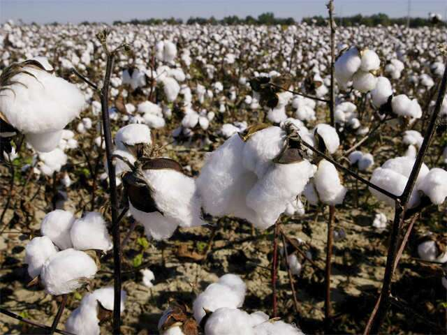

कापूस विषयी माहिती

कापूस
कापूस हे राज्यातील दुसरे महत्त्वाचे नगदी पिक असून २०१२-२०१३ मध्ये त्याखालील क्षेत्र देशातील एकूण क्षेत्राच्या ३५
टक्के (४१.४६ लाख हेक्टर) इतके आहे.
तथापी, कापूस रुईची दर हेक्टरी उत्पादकता (४९६ कि/हे) ही राष्ट्रीय
उत्पादकतेपेक्षा (३०५ कि) कमी आहे. राज्यामध्ये जवळजवळ ९५ टक्के क्षेत्रावर बी.टी. वाणाची लागवड झाली होती.
उन्हाळी बागायती कपाशी
कपाशीचे पीक हे जास्त कालावधीचे पीक आहे. कपाशीसाठी स्वच्छ उबदार व कोरडे हवामान अनुकूल असते.
कपाशीच्या बियाण्याची
उगवण होण्यासाठी १८ ते २० अंश सेल्सिअस, अधिक वाढ होण्यासाठी २० ते २७ अंश सेल्सिअस इतक्या तापमानाची आवश्यकता असते.
कपाशीसाठी किमान व कमाल तापमान १५ ते ३५ अंश सेल्सीअस व हवेतील आर्द्रता ७५ टक्क्यांपेक्षा कमी असावी लागते.
उष्ण
दिवस आणि थंड रात्र याप्रकारचे हवामान बोंडे चांगली भरण्यास व उमलण्यास उपयुक्त असते.
कपाशीचे पीक सुमारे सहा महिने शेतात राहत असल्यामुळे योग्य जमिनीची निवड अत्यंत महत्त्वाची असते. कपाशी लागवडीसाठी
काळी, मध्यम ते खोल (९० सें.मी) व पाण्याचा चांगला निचरा होणारी जमिन निवडावी. उथळ, हलक्या क्षारयुक्त आणि पानथळ
जमिनीत कपाशीची लागवड करण्याचे टाळावे.
अन्नद्रव्याची उपलब्धता व जमिनीचा सामू याचा परस्पर संबंध असल्याने जमिनीचा
सामू साधारणत: ६ ते ८.५ पर्यत असावा.
कपाशीच्या झाडांची मुळे जमिनीत ७० ते ९० दिवसात ६० ते ९० सें.मी पर्यंत खोल वाढतात. कपाशीच्या मुळांची वाढ चांगली
व्हावी यासाठी, एक खोल नांगरट व २ ते ३ कुळवाच्या पाळ्या देऊन ढेकळे फोडावीत.
आधीच्या पिकांची धसकटे, पळकाट्या, पाला
व इतर कचरा गोळा करुन तो जाळावा व शेत स्वच्छ ठेवावे. त्यामुळे कीड व रोग यांच्या सुप्तावस्था नष्ट होण्यास मदत
होते. शेणखत वा कंपोस्ट खत हेक्टरी २५ गाड्या या प्रमाणात मिसळावे.
९० सें.मी. अंतरावर उथळ स-या पाडाव्यात, उथळ
स-यांमुळे कपाशीला आवश्यक तेवढे पाणी देता येते व त्यामुळे पाण्याची बचत होते. खोल व रुंद स-यांमुळे झाडाची मुळे वर
राहतात व जादा पाण्यामुळे पिकांची कायिक, शाकीय वाढ जास्त होऊन उत्पादनात घट येते. शिवाय पाणीही जरुरीपेक्षा जास्त
दिले जाते. स-यांची लांबी जमिनीच्या प्रकारानुसार ६ ते ८ मीटर ठेवावी.
बीजप्रक्रिया
बुरशीनाशक
अप्रमाणित बियाण्यास थायरम बुरशीनाशकांची प्रक्रिया प्रति किलो बियाण्यास ३ ग्रॅम या प्रमाणात करावी. त्यामुळे मर,
करपा यांसारख्या रोगांचा प्रादुर्भाव कमी होतो.
जीवाणू संवर्धक
हवेतील नत्राचे स्थिरीकरण करुन नत्र खतांच्या मात्रेत बचत करण्यासाठी अॅझोटोबॅक्टर किंवा अॅझोस्पिरीलम या जीवाणू
संवधर्काची प्रति किलो बियाण्यास २५ ग्रॅम या प्रमाणात प्रक्रिया करावी.
तसेच जमिनीतील मातीच्या कणांद्वारे धरुन
ठेवलेले स्फुरद पिकांना उपलब्ध करुन देण्यासाठी स्फूरद विरघळणा-या जीवाणू संवर्धकाची प्रक्रिया करावी म्हणजे नत्र व
स्फुरदयुक्त खताच्या मात्रेमध्ये जवळजवळ २५ ते ३० टक्के बचत होते.
पेरणी
बागायती बिगर बीटी कपाशीची पेरणी वेळेवर करणे अत्यंत आवश्यक आहे. पेरणी उशिरा झाल्यास वेचणीच्या वेळी पाऊस येऊन
नुकसान संभवते किंवा त्यावर किडी व रोगांचा प्रादुर्भाव होऊन उत्पादनाता घट येते.
पेरणी झाल्यानंतर लगेचच ४ ते ६ इंच
आकाराच्या सच्छिद्र पॉलिथिन पिशव्यांमध्ये माती आणि कंपोस्ट अथवा शेणखत भरावे व भरपूर पाणी द्यावे. नंतर प्रत्येक
पिशवीवर २ ते ३ बिया लाव्याव्यात.
या पिशव्यांचा उपयोग नांगे भरण्यासाठी करावा. तोपर्यंत पिशव्या झाडाच्या सावलीत
ठेऊन त्यांचे किडीपासून सरंक्षण करावे व वरचेवर पाणी द्यावे. साधारणपणे एका एकराच्या नांग्या भरण्यासाठी २५० ते ३००
पिशव्या पुरतात.
वेगवेगळ्या भागासाठी, उदा. १) सोलापूर, सांगली, सातारा व पुणे जिल्ह्यांसाठी मार्चचा पहिला पंधरवडा, २) अहमदनगर
जिल्हयासाठी एप्रिलचा पहिला पंधरवडा आणि ३) खानदेश, विदर्भ, मराठवाड्यातील जिल्ह्यांसाठी मे चा दुसरा पंधरवडा,
याप्रमाणे पेरणीच्या वेळीची शिफारस केलेली आहे.
पेरणी करताना सरीच्या मध्यावर २-३ इंच खोल खड्डा करावा व त्यात
शिफारस केल्याप्रमाणे रासायनिक खते, बिया टाकून पूर्णपणे मातीने झाकावे व लगेच पाणी द्यावे. तसेच सरी पाडण्यापूर्वी
शेणखत दिले नसल्यास प्रत्येक खड्ड्यात रासायनिक खतांबरोबर शेणखत द्यावे.
बीटी कपाशी वाणांची लागवड वातावरणाचे तापमान ३५ डि.से.पेक्षा कमी झाल्यावरच (२५ मे नंतर) करावी. तसेच कपाशीची लागवड
जमीन ओलावून वापशावर करावी.
बागायती कपाशीसाठी रासायनिक खते
बागायती कपाशी ही रासायनिक खतांच्या मात्रांना योग्य प्रतिसाद देते म्हणून खतांचा पुरवठा ही एक महत्त्वाची बाब आहे.
संकरित कापसासाठी प्रति हेक्टरी १०० किलो नत्र, ५० किलो स्फुरद व ५० किलो पालाश, तर सुधारित वाणांसाठी ८० किलो
गाड्या शेणखत शेवटच्या कुळवाच्या पाळी अगोदर द्यावे किंवा खते कमी असल्यास लागवडीच्या वेळी प्रत्येक फुलीवर छोटा
खड्डा घेऊन त्यात ओंजळभर शेणखत टाकावे व मातीत चांगले मिसळावे.
वीस टक्के नत्र व संपूर्ण स्फुरद व पालाश पेरणीच्या
वेळी द्यावे व उरलेले नत्र समान दोन हप्त्यांत पेरणीनंतर ३० व ६० दिवसांनी द्यावे. बीटी वाणासाठी शिफारशीत
खतमात्रेपेक्षा २५ टक्के रासायनिक खतमात्रा (१२५:६५:६५ किलो प्रति हे.) जास्त घ्याव्यात.
द्रवरुप खतांचा वापर करताना माती परिक्षण अहवालाचा अभ्यास करुन खतांच्या मात्रा देणे योग्य ठरते. नत्र, स्फुरद व
पालाश या प्रमुख घटकांव्यतिरिक्त कापूस पिकास मॅग्नेशियम, गंधक, लोह, जस्त, मॅगनीज आणि बोरॉन या सूक्ष्म
अन्नद्रव्यांची सुध्दा गरज असते.
ही अन्नद्रव्ये विद्राव्य खतांमध्ये उपलब्ध असतात. सूक्ष्म अन्नद्रव्यांमुळे
बोंडाची पूर्णपणे वाढ होऊन बोंडे लवकर फुटतात. द्रवरुप खते संचाद्वारे देण्यासाठी व्हेंचुरी किंवा खत टाकी इंजेक्टर
पंप या साधनांचा वापर करावा.
आंतरमशागत
नांग्या भरणे
सर्वसाधारणपणे १० दिवसांत सर्व बिया उगवतात, ज्या ठिकाणी बी उगवले नसेल त्या ठिकाणी राखून ठेवलेल्या बियाण्यापासूनच,
त्याच सुधारित अगर संकर वाणाचे नांग्या भरण्यासाठी वापरावे व लगेच पाणी द्यावे, किंवा वर उल्लेख केल्याप्रमाणे
पॉलिथिन पिशव्यांतील रोपे २० ते २५ दिवसांच्या आतच लावावीत.
विरळणी
पंधरा दिवसांनंतर प्रत्येक फुलीवर दोनच जोमदार रोपे ठेऊन बाकीची उपटून टाकावीत. विरळणी जमीन ओली असताना करावी.
खुरपणी
पेरणीनंतर जरुरीप्रमाणे दोन खुरपण्या व कोळपणी करुन ६० दिवसांपर्यंत पीक तणविरहीत ठेवावे. यासाठी जेथे शक्य असेल
तेथे जरुरीप्रमाणे रासायनिक तणनाशकांचा वापर करावा. त्यासाठी खालीलप्रमाणे एक रासायनिक तणनाशक वापरावे व
आवश्यकतेप्रमाणे पिकाच्या खुरपण्या कराव्यात. तणनाशकामुळे खुरपणीच्या खर्चात बचत होते.
शेंडे व पाने खुडणे
भारी जमिनीत विशेषत: रासायनिक खते व पाणी जास्त दिले तर बागायती क्षेत्रातील संकरित वाणांची कायिक वाढ जास्त होते.
त्यामुळे बोंडे लागण्याचे प्रमाण कमी होते व बोंडाच्या वजनामुळे फांद्या मोडण्याचा संभव असतो.
यासाठी पीक ७० ते ८०
दिवसांचे झाल्यावर झाडाच्या मुख्य फांदीचा शेंडा खुडावा, यामुळे पिकात हवा खेळती राहते. बोंडे सडत नाहीत व कीड आणि
रोगांचा प्रादुर्भाव कमी होतो.
संजीवकाचा वापर
कपाशीला लागणारे पात्या, फुले, बोंडे यांची कीड, रोग व हवामानातील बदलामुळे मोठ्या प्रमाणात गळ होते व त्यामुळे
उत्पादनात घट येते.
नैसर्गिक कारणांमुळे होणारी पात्या, फुले, बोंडे यांची गळ कमी करण्यासाठी नॅप्थॅलिन अॅसेटिक
अॅसीड (प्लॅनोफिक्स) या संजीवकाची हेक्टरी १०० मि.ली व ५०० लिटर पाणी या प्रमाणात मिसळून पात्या लागल्या असतील
तेव्हा पहिली फवारणी करावी. दुसरी फवारणी त्यानंतर १५ ते २० दिवसांनी करावी. यामुळे उत्पादनात १० टक्के वाढ होते.
पाणी पुरवठा
सर्वसाधारणपणे मार्च-एप्रिल महिन्यात पेरलेल्या कपाशीला ८०० ते ९०० मि.लि. पाणी लागते. कपाशीला पेरणीपासून पाते
लागेपर्यंत तुलनेने कमी पाणी लागते.
या काळात पिकाला जास्त पाणी देऊ नये, कारण जादा पाण्यामुळे झाडांची अनावश्यक वाढ
होते. पीक फुलो-यात आल्यावर पाण्याची गरज वाढत जाते व बोंडे भरताना ती सर्वांत जास्त असते. कपाशीच्या उगवण, पाते
लागणे, फुले उमलणे, बोंडे धरणे व भरणे या महत्त्वाच्या अवस्था असून या अवस्थांच्या काळात जमिनीत ओलावा असणे जरुरीचे
आहे. पेरणी ओलाऊन करावी.
नंतर ३ ते ४ दिवसांनी चिंबवणीचे पाणी द्यावे. पावसाळा सुरु होऊन पुरेसा पाऊस पडेपर्यंत
हवामान व जमिनीच्या मगदुरानुसार १० ते १२ दिवसांच्या अंतराने पाण्याच्या पाळ्या द्याव्यात. पावसाळ्यात पाऊसमान पाहून
पाणी द्यावे. मात्र दोन पाळ्यांत १५ ते २० दिवसांपेक्षा जास्त अंतर ठेऊ नये.
जर पाण्याचा पुरवठा अपुरा असेल तर सरी आड सरी यापध्दतीने पाणी द्यावे. पहिल्या पाळीला १ ली, ३ री, ५ वी याप्रमाणे
स-यांत पाणी सोडावे व दुस-या पाळीला २ री, ४ थी, ६ वी याप्रमाणे स-यांत पाणी सोडावे. यामुळे कपाशीला लागणा-या
पाण्यात सुमारे ३० टक्के बचत होते.
ठिबक सिंचनाचा वापर
शेतात पाहणी केल्यानंतर आराखड्यानुसार ठिबक संचाचीउभारणी करावी. त्यामुळे पाण्याची बचत तर होतेच शिवाय तणांचा उपद्रव
कमी होतो.
पेरणी अंतर
उन्हाळी बागायती कपाशीत भुईमूगाचा एस.बी. ११ हा उपट्या वाण किंवा मुग, उडीद किंवा गवार आंतरपीक म्हणून घेतल्यास
जास्त फायदा होतो. यासाठीच्या सरीच्या एका बाजूस कपाशी, दुस-या बाजूस भुईमूग यांची १: १ या प्रमाणात पेरणी करावी.
दोन्ही पिकांची पेरणी सरीच्या बगलेच्या मध्यावर करावी. आंतरपिकाची पेरणी कपाशीच्या पेरणीपूर्वी एक महिना अगोदर
केल्यास फायदा झाल्याचे दिसून आले आहे. तसेच तूर, सोयाबीन यासारखी आंतरपीके घेतल्यास फायदा होतो.
वेचणी
शेतातील अंदाजे ३० ते ३५ टक्के बोंडे फुटल्यावर पहिली वेचणी करावी, त्यानंतर साधारणपणे १५ ते २० दिवसांच्या अंतराने
२ ते ३ वेचण्या कराव्यात.
कापसाची वेचणी सकाळी करणे अधिक चांगले, कारण हवेतील ओलाव्याने काडीकचरा, असलेला व किडका
आणि कवडी कापूस वेगळा वेचावा. प्रत्येक जातीचा कापूस वेगळा साठवावा, वेचल्यानंतर कापूस ३-४ दिवस उन्हात वाळवून
स्वच्छ व कोरड्या जागी साठवावा.
बोंडअळी नियंत्रणासाठी विशेष काळजी
पीक साधारणपणे १ ते १.५ महिन्याचे असताना शेतात शेंडेअळीच्या प्रादुर्भाव आढळून येतो. किडग्रस्त शेंडे तोडून नाश
करावा.
संश्लेषित पायरेथ्राईड ही किटकनाशके प्रभावी असली तरी एकाच हंगामात दोनपेक्षा अधिक वेळा त्याचा वापर करुन नये
संश्लेषित पायरेथ्राईडच्या वापरानंतर दुसरी फवारणी अॅसिफेट/कार्बारील किंवा क्यॅुनॉलफॉसची करावी.
अमेरिकन बोंडअळीच्या नियंत्रणासाठी एच.एन.पी.व्ही. हे जैविक विषाणू हेक्टरी ४५० एल.ई. या प्रमाणात सायंकाळच्या वेळी
फवारावे.
सर्व प्रकारच्या बोंडअळीसाठी बी.टी, हे जैविके अणुजीवयुक्त किटकनाशक वापरावे.
अधुनमधुन कीडग्रस्त गळालेली पाने, फुले, बोंडे वेचून नष्ट करावीत.
कपाशीचा खोडवा घेण्याचे पूर्णत: टाळावे.
निंबोळी अर्क असलेल्या किटकनाशकांच्या सुरुवातीच्या काळात वापर करावा.
पॉवर पंप वापरताना किटकनाशकांचे प्रमाण तिप्पट करावे.
उत्पादन – बागायती कपाशीच्या सुधारित वाणांचे हेक्टरी २० ते २४ क्विंटल तर संकरित वाणाचे हेक्टरी २५ ते ३० क्विंटल.